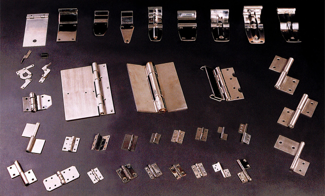
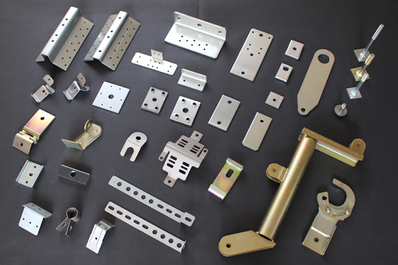

HINGES & PRESSED PARTS ／ 埼玉・八潮
開いて、閉じる。
それだけを60年。
蝶番（ヒンジ）とプレス加工部品のメーカーです。 自動車・トラックボデー部品、鉄蝶番、ステンレス蝶番、住宅部品。 「広い分野で使用されているヒンジとプレス加工部品は、 当社の得意とするところです」 1957年創業、従業員30名。埼玉県八潮市。
蝶番は、開いて閉じることだけを何万回も繰り返す部品です。 だからこそ、芯の位置と羽根の精度がそのまま製品寿命になります。 細谷製作所は鉄とステンレスの両方で蝶番を作っています。
1957年
創業（昭和32年12月）
1966年に株式会社へ改組
16台
プレス機
（30t〜300t）
30名
従業員数
2,310m²
敷地面積
（建物4棟 計990m²）
PRODUCTS
作っているもの
鉄蝶番
平蝶番、抜差蝶番、特殊蝶番。
ステンレス蝶番
屋外や水回りなど、錆を嫌う場所へ。
トラック部品
自動車・トラックボデー部品。 ISO の登録範囲にも「トラック・住宅関連等のプレス部品及び 各種蝶番の製造」と明記されています。
住宅部品
住宅向けのプレス部品。


特に広い分野で使用されている「ヒンジ（蝶番）とプレス加工部品」は、
当社の得意とするところです。
代表取締役社長 鈴木 俊章（ごあいさつより）。 「当社は創業以来約60年にわたって堅実な経営方針のもとに、 自動車業界の発展などに相まって着実な成長を遂げて参りました。」と続きます。
EQUIPMENT
30tから300tまで。
現行サイトの設備紹介に載っている台数をそのまま表にしました。 プレスだけで16台、能力は30tから300tまで9段階あります。
| 機械設備 | メーカー | 台数 |
|---|---|---|
| 300TON ダブルクランクプレス | 佐藤鉄工 | 1 |
| 200TON ハイフレックス | アイダ | 1 |
| 200TON PS-20プレス | アイダ | 1 |
| 150TON ハイフレックスプレス | アイダ | 2 |
| 110TON ハイフレックスプレス | アイダ | 1 |
| 80TON ハイフレックスプレス | アイダ | 4 |
| 60TON ハイフレックスプレス | アイダ | 3 |
| 55TON ハイフレックスプレス | アイダ | 1 |
| 45TON トルクバックプレス | アマダ | 1 |
| 30TON ハイフレックスプレス | アイダ | 1 |
| プレス機 合計 | 16 | |
| 機械設備 | メーカー | 台数 |
|---|---|---|
| NCレベラーフィード（NCML2-400） | ダテ | 1 |
| NCレベラーフィード（NCLH-400） | ダテ | 1 |
| NCレベラーフィード（NCLH8-500） | ダテ | 1 |
| US-150 油圧カシメ機 | 吉川鉄工 | 1 |
| バナロボ（溶接） | ナショナル | 3 |
| CO₂溶接機 | ナショナル | 6 |
| 金型自動収納ラック | ワシノ | 1 |
| 合計 | 14 | |
このほか「金型設備 1式」の記載があります。 金型自動収納ラックの単位は原文では「基」です。
300t ダブルクランク
最大能力は300t。この1台だけが佐藤鉄工製で、 ほかのプレスはアイダとアマダです。
80tが4台、60tが3台
中容量を厚く持つ構成です。 同じ能力の機械が複数あることは、段取り替えの待ちが減ることを意味します。
金型を自動で出し入れする
金型自動収納ラック（ワシノ）を保有。 多品種のプレス部品を扱う会社にとって、 金型の管理は生産性そのものです。
ISO 9001
登録番号まで、公開。
- 登録日
- 2004年11月24日
- 登録範囲
- トラック・住宅関連等のプレス部品及び各種蝶番の製造
- 適用規格
- JIS Q 9001:2008（ISO 9001:2008）
- 審査登録機関
- 一般財団法人 日本科学技術連盟 ISO審査登録センター
- 登録番号
- JUSE-RA-1075
現行サイト「ISO認証取得」の記載どおりです。 「今後も当社は、この品質マネジメントシステムを改善し、 お客様への品質保証体制の更なる推進・展開に努めていきます」とあります。
COMPANY
会社概要
- 商号
- 株式会社 細谷製作所
- 創業
- 昭和32年12月 細谷製作所として発足
昭和41年10月 株式会社に改組 - 資本金
- 3,000万円（平成27年4月現在）
- 従業員数
- 30名
- 敷地
- 土地 2,310m²／建物 4棟 計990m²
- 主要製造品目
- 自動車・トラックボデー部品、各種蝶番、住宅部品、その他プレス部品
- 所在地
- 〒340-0811 埼玉県八潮市大字二丁目171番地
TEL 048-995-1711／FAX 048-995-8772 - 加盟団体
- 埼玉県経営合理化協会／埼玉県産業振興公社／八潮市商工会
- 取引銀行
- 三菱東京UFJ銀行 草加支店／みずほ銀行 足立支店／ 埼玉りそな銀行 八潮支店／埼玉県信用金庫 八潮支店
図面と、必要数をお知らせください。
蝶番は鉄・ステンレスの両方に対応します。 プレス部品は30tから300tまで16台で、 中容量は同じ能力の機械を複数持っています。 お問い合わせには一両日中にご連絡いたします。
〒340-0811 埼玉県八潮市大字二丁目171番地
FAX 048-995-8772